#label: setup
pacman::p_load(sf, sp, tmap, tidyverse, knitr, stplanr, reshape2, performance)
tmap_mode("plot")
tmap_style("natural")
set.seed(1234)Take-home Exercise 2: Applied Spatial Interaction Models: A case study of Singapore public bus commuter flows
1. Overview
Commute behaviors are influenced by various factors, posing challenges for transport operators and urban managers. Understanding these dynamics traditionally involves costly and time-consuming commuter surveys, presenting drawbacks such as delayed data analysis and outdated information upon report completion. The impact of removing a public bus service along a route raises questions about how commuters, particularly those residing along the corridor, adapt to such changes.
In the context of evolving digital urban infrastructures, the widespread integration of technologies like GPS in vehicles and SMART cards for public transport payments generates vast geospatially-referenced datasets. These datasets offer a valuable framework for tracking movement patterns over space and time. However, the rapid growth of such data has outpaced planners’ capabilities to efficiently utilize and derive meaningful insights from it. This inefficiency hampers the return on investment in data collection and management, hindering the potential benefits that could be gained from understanding urban mobility patterns and addressing commuter needs effectively. Striking a balance between technological advancement and analytical capacity becomes crucial for unlocking the full potential of digital urban infrastructure data in shaping more responsive and efficient urban transportation systems.
1.1 Motivation and Objective
This take-home exercise is motivated by two main reasons. Firstly, while there is a growing abundance of open data accessible to the public, there has been limited practical research demonstrating the effective integration, analysis, and modeling of these diverse data sources to inform policymaking decisions.
Secondly, there is an absence of practical research illustrating the application of geospatial data science and analysis (GDSA) in facilitating decision-making.
Hence, for this take-home exercise, we are conducting a case study to demonstrate the potential value of GDSA to integrate publicly available data from multiple sources for building a spatial interaction models to determine factors affecting urban mobility patterns of public bus transit.
1.2 The Task
The specific tasks of this take-home exercise are as follows:
Geospatial Data Science
Derive an analytical hexagon data of 375m (this distance is the perpendicular distance between the centre of the hexagon and its edges) to represent the traffic analysis zone (TAZ).
With reference to the time intervals provided in the table below, construct an O-D matrix of commuter flows for a time interval of your choice by integrating Passenger Volume by Origin Destination Bus Stops and Bus Stop Location from LTA DataMall. The O-D matrix must be aggregated at the analytics hexagon level. For purposes of this take home exercise, we will focus on analyzing the commuter flows for Weekday Morning Peak only.
Peak hour period Bus tap on time Weekday morning peak 6am to 9am Weekday afternoon peak 5pm to 8pm Weekend/holiday morning peak 11am to 2pm Weekend/holiday evening peak 4pm to 7pm Display the O-D flows of the passenger trips by using appropriate geovisualisation methods (not more than 5 maps).
Describe the spatial patterns revealed by the geovisualisation (not more than 100 words per visual).
Assemble at least three propulsive and three attractiveness variables by using aspatial and geospatial from publicly available sources.
Compute a distance matrix by using the analytical hexagon data derived earlier.
Spatial Interaction Modelling
Calibrate spatial interactive models to determine factors affecting urban commuting flows at the selected time interval.
Present the modelling results by using appropriate geovisualisation and graphical visualisation methods. (Not more than 5 visuals)
With reference to the Spatial Interaction Model output tables, maps and data visualisation prepared, describe the modelling results. (not more than 100 words per visual).
2. The Data
2.1 Open Government Data
For the purpose of this assignment, data from several open government sources will be used:
Passenger Volume by Origin Destination Bus Stops, Bus Stop Location, Train Station and Train Station Exit Point, just to name a few of them, from LTA DataMall.
Master Plan 2019 Subzone Boundary, HDB Property Information, School Directory and Information and other relevant data from Data.gov.sg.
2.2 Specially collected data
Business, entertn, F&B, FinServ, Leisure&Recreation and Retails are geospatial data sets of the locations of business establishments, entertainments, food and beverage outlets, financial centres, leisure and recreation centres, retail and services stores/outlets compiled for urban mobility study. These have been extracted from elearn Take-home Exercise 2 data folder provided by the course instructor.
HDB: This data set is the geocoded version of HDB Property Information data from data.gov. The data set is prepared using September 2021 data.
Important: These data sets are specially prepared by the course instructor for teaching purposes. These data sets should not be used beyond ISSS624 without getting permission from the course instructor.
3 Getting Started
3.1 Setting the Analytical Tools
The code chunk below installs and loads tmap, sf, sfdep, spdep, performance, knitr, ggpubr, tidyverse, httr packages into R environment.
For this exercise, in the following code chunk, p_load() from pacman package is used to install and load the following R packages into the R environment:
sf/sp for importing, managing, and processing geospatial data,
tmap for creating thematic maps,
tidyverse for performing data science tasks such as importing, wrangling and visualising data,
knitr for creating html table.
stplanr for generating flow lines
reshape for generating pivot tables from matrix,
performance for for model comparisons
4 Data Preparation
4.1 Data
4.1.1 Importing data for create the map shape
We will import the Master Plan 2019 Subzone Boundary data set. We will only keep the SUBZONE_N column and the geometry to use this as the base for our visualizations.
Singapore Boundary Data
mpsz <- st_read(dsn = "data/geospatial",
layer = "MPSZ-2019") %>%
select(SUBZONE_N)Reading layer `MPSZ-2019' from data source
`D:\starweb84\ISSS624\Take-home_Ex\Take-home_Ex2\data\geospatial'
using driver `ESRI Shapefile'
Simple feature collection with 332 features and 6 fields
Geometry type: MULTIPOLYGON
Dimension: XY
Bounding box: xmin: 103.6057 ymin: 1.158699 xmax: 104.0885 ymax: 1.470775
Geodetic CRS: WGS 84This data frame uses the global GPS standard, WGS84. We will convert this to SVY21 projection.
mpsz <- mpsz %>% st_transform(crs=3414)Next, we import the bus stop data to generate the honeycomb grid based on locations with bus stops.
Bus Stop data
busstops <- st_read(dsn = "data/geospatial",
layer = "BusStop")Reading layer `BusStop' from data source
`D:\starweb84\ISSS624\Take-home_Ex\Take-home_Ex2\data\geospatial'
using driver `ESRI Shapefile'
Simple feature collection with 5159 features and 3 fields
Geometry type: POINT
Dimension: XY
Bounding box: xmin: 3970.122 ymin: 26482.1 xmax: 48284.56 ymax: 52983.82
Projected CRS: SVY21We would want to use SVY21 as the projection for this study. Hence we check the data.
st_crs(busstops)Coordinate Reference System:
User input: SVY21
wkt:
PROJCRS["SVY21",
BASEGEOGCRS["WGS 84",
DATUM["World Geodetic System 1984",
ELLIPSOID["WGS 84",6378137,298.257223563,
LENGTHUNIT["metre",1]],
ID["EPSG",6326]],
PRIMEM["Greenwich",0,
ANGLEUNIT["Degree",0.0174532925199433]]],
CONVERSION["unnamed",
METHOD["Transverse Mercator",
ID["EPSG",9807]],
PARAMETER["Latitude of natural origin",1.36666666666667,
ANGLEUNIT["Degree",0.0174532925199433],
ID["EPSG",8801]],
PARAMETER["Longitude of natural origin",103.833333333333,
ANGLEUNIT["Degree",0.0174532925199433],
ID["EPSG",8802]],
PARAMETER["Scale factor at natural origin",1,
SCALEUNIT["unity",1],
ID["EPSG",8805]],
PARAMETER["False easting",28001.642,
LENGTHUNIT["metre",1],
ID["EPSG",8806]],
PARAMETER["False northing",38744.572,
LENGTHUNIT["metre",1],
ID["EPSG",8807]]],
CS[Cartesian,2],
AXIS["(E)",east,
ORDER[1],
LENGTHUNIT["metre",1,
ID["EPSG",9001]]],
AXIS["(N)",north,
ORDER[2],
LENGTHUNIT["metre",1,
ID["EPSG",9001]]]]We see EPSG value is 9001, which correspond to WGS84. We have to fix the projection by transforming to EPSG value of 3414, which corresponds to SVY21.
busstops <- st_transform(busstops, crs = 3414)We can do a visual check to confirm if the map has been imported as expected.
Show the code
tmap_options(check.and.fix = TRUE)
tm_shape(mpsz) +
tm_polygons("grey", title = "Singapore Boundary") +
tm_layout(main.title = "Map of bus stops in Singapore",
main.title.position = "center",
main.title.size = 1.0,
legend.height = 0.4,
legend.width = 0.4,
frame = TRUE) +
tm_shape(busstops) +
tm_dots(col = "red", size = 0.005, title = "Bus Stops") +
tm_compass(type="8star", size = 2) +
tm_scale_bar() +
tm_grid(alpha = 0.2)The map shows that there are bus stops that are outside Singapore bounds (grey area). We will remove them as we are only interested in bus stops within Singapore. We will remove the points outside Singapore from our busstops data by using st_intersection(). We will just retain the BUS_STOP_N to remove the columns we do not need, and check the map again.
busstops <- busstops %>%
st_intersection(mpsz) %>%
select(BUS_STOP_N,)Show the code
tmap_options(check.and.fix = TRUE)
tm_shape(mpsz) +
tm_polygons("grey", title = "Singapore Boundary") +
tm_layout(main.title = "Bus stops in Singapore",
main.title.position = "center",
main.title.size = 1.0,
legend.height = 0.4,
legend.width = 0.4,
frame = TRUE) +
tm_shape(busstops) +
tm_dots(col = "red", size = 0.005, title = "Bus Stops") +
tm_compass(type="8star", size = 2) +
tm_scale_bar() +
tm_grid(alpha = 0.2)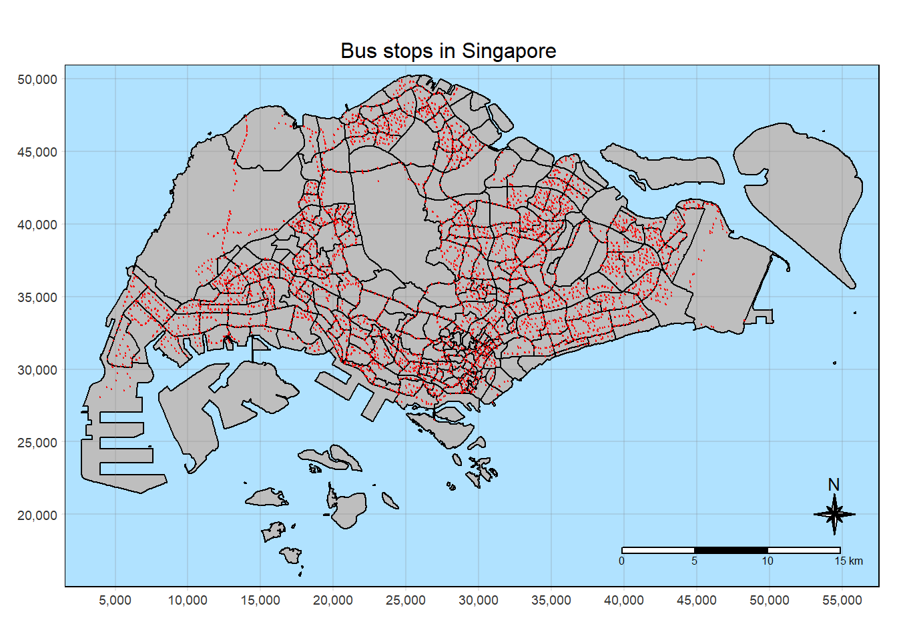
We now save to the data
write_rds(mpsz, "data/rds/mpsz.rds")
write_rds(busstops, "data/rds/busstops.rds")Creating the honeycomb grid Next, we create the honeycomb grid using st_make_grid(), providing cellsize of 750m.
honeycomb <- busstops %>% st_make_grid(cellsize = 750,
what="polygons",
square = FALSE) %>%
st_sf() %>%
filter(lengths(st_intersects(geometry, busstops)) > 0)We can plot the hexagon grid as follow:
Show the code
tm_shape(mpsz) +
tm_polygons("grey", title = "Singapore Boundary", alpha = 0.5) +
tm_shape(honeycomb) +
tm_polygons(col = "blue", title = "Hexagons", alpha = 1) +
tm_layout(main.title = "Honeycomb grid with bus stops",
main.title.position = "center",
main.title.size = 1.0,
legend.height = 0.4,
legend.width = 0.4,
frame = TRUE) +
tm_compass(type="8star", size = 2, bg.color = "white", bg.alpha = 0.5) +
tm_scale_bar(bg.color = "white", bg.alpha = 0.5) +
tm_shape(busstops) +
tm_dots(col = "red", size = 0.001, title = "Bus Stops") +
tm_grid(alpha = 0.2)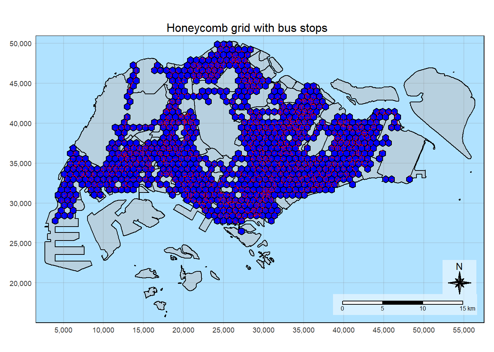
Assigning id to each hexagon We will assign id for each hexagon to be used as a unique identifier. We will store this id under the hexagon_id column.
honeycomb$hexagon_id <- sprintf("H%04d", seq_len(nrow(honeycomb))) %>% as.factor()
kable(head(honeycomb))| geometry | hexagon_id |
|---|---|
| POLYGON ((3970.122 27348.13… | H0001 |
| POLYGON ((4345.122 27997.65… | H0002 |
| POLYGON ((4345.122 30595.72… | H0003 |
| POLYGON ((4720.122 28647.16… | H0004 |
| POLYGON ((4720.122 29946.2,… | H0005 |
| POLYGON ((4720.122 31245.24… | H0006 |
We save this main geometry
write_rds(honeycomb, "data/rds/honeycomb.rds")4.1.2 Importing the Origin-Destination (OD) data
We will start by loading the relevant datasets.
mpsz <- read_rds("data/rds/mpsz.rds")
honeycomb <- read_rds("data/rds/honeycomb.rds")
busstops <- read_rds("data/rds/busstops.rds")Next, we will import the Passenger Volume by Origin Destination Bus Stops data set downloaded from LTA DataMall by using read_csv() of readr package. For this hands-on we will use data captured in Oct 2023.
odbus <- read_csv("data/aspatial/origin_destination_bus_202310.csv")We will check odbus tibble data table by using the code chunk below.
glimpse(odbus)Rows: 5,694,297
Columns: 7
$ YEAR_MONTH <chr> "2023-10", "2023-10", "2023-10", "2023-10", "2023-…
$ DAY_TYPE <chr> "WEEKENDS/HOLIDAY", "WEEKDAY", "WEEKENDS/HOLIDAY",…
$ TIME_PER_HOUR <dbl> 16, 16, 14, 14, 17, 17, 17, 7, 14, 14, 10, 20, 20,…
$ PT_TYPE <chr> "BUS", "BUS", "BUS", "BUS", "BUS", "BUS", "BUS", "…
$ ORIGIN_PT_CODE <chr> "04168", "04168", "80119", "80119", "44069", "2028…
$ DESTINATION_PT_CODE <chr> "10051", "10051", "90079", "90079", "17229", "2014…
$ TOTAL_TRIPS <dbl> 3, 5, 3, 5, 4, 1, 24, 2, 1, 7, 3, 2, 5, 1, 1, 1, 1…A quick check of odbus tibble data frame shows that the values in OROGIN_PT_CODE and DESTINATON_PT_CODE are char type. Hence no further conversion is required.
4.1.3 Extracting the OD study data
For the purpose of this exercise, we will focus on analyzing the commuter flows for Weekday Morning Peak only. Hence we will extract commuting flows on weekday and between 6 and 9 o’clock.
odbus6_9 <- odbus %>%
filter(DAY_TYPE == "WEEKDAY") %>%
filter(TIME_PER_HOUR >= 6 &
TIME_PER_HOUR <= 9) %>%
group_by(ORIGIN_PT_CODE,
DESTINATION_PT_CODE) %>%
summarise(TRIPS = sum(TOTAL_TRIPS)) %>%
rename(
ORIG_BUS_STOP_N = ORIGIN_PT_CODE,
DEST_BUS_STOP_N = DESTINATION_PT_CODE)
glimpse(odbus6_9)Rows: 242,208
Columns: 3
Groups: ORIG_BUS_STOP_N [5,029]
$ ORIG_BUS_STOP_N <chr> "01012", "01012", "01012", "01012", "01012", "01012", …
$ DEST_BUS_STOP_N <chr> "01112", "01113", "01121", "01211", "01311", "07371", …
$ TRIPS <dbl> 290, 118, 77, 118, 165, 14, 30, 16, 35, 26, 2, 8, 1, 2…Creating lookup table to link bus stop to hexagon Next, we want to link the trip data to the their corresponding hexagon. We will create a lookup table via st_intersection().
busstop_hex <- st_intersection(busstops, honeycomb) %>%
st_drop_geometry() %>%
select(c(BUS_STOP_N, hexagon_id))
glimpse(busstop_hex)Rows: 5,154
Columns: 2
$ BUS_STOP_N <chr> "25059", "25751", "26379", "26369", "25741", "26399", "2638…
$ hexagon_id <fct> H0001, H0002, H0003, H0003, H0004, H0005, H0005, H0005, H00…Next, we want to associate each origin bus stop and destination bus stop to their respective hexagons. First, we do a check on odbus6_9 and busstop_hex data to find out if there is any difference in bus stops listed in the 2 sets of data.
c(
odbus6_9$ORIG_BUS_STOP_N[!(odbus6_9$ORIG_BUS_STOP_N %in% busstop_hex$BUS_STOP_N)],
odbus6_9$DEST_BUS_STOP_N[!(odbus6_9$DEST_BUS_STOP_N %in% busstop_hex$BUS_STOP_N)]
) %>% unique() %>% length()[1] 62c(busstop_hex$BUS_STOP_N) %>% unique() %>% length()[1] 5139We note that 62 bus stops in odbus6_9 that are not in busstop_hex. This can be attributed to the bus stops we removed in the data preparation due to them being outside Singapore or also because the BusStops data set did not having complete information.
As the effort required to manually map all of them (using google, LTA data) can be quite substantial and missing information consists of only approximately 1% of the odbus6_9 dataset, for the purposes of the study, we will remove these bus stops from our analysis as we do not have the geospatial data to associate to the hexagons from the data sets made available to us.
we will use inner_join to keep only the observations in trips with the matching bus stops in busstop_hex.
odbus6_9_hex <- odbus6_9 %>%
inner_join(busstop_hex,
by = c("ORIG_BUS_STOP_N" = "BUS_STOP_N")) %>%
rename(ORIG_HEX_ID = hexagon_id) %>%
inner_join(busstop_hex,
by = c("DEST_BUS_STOP_N" = "BUS_STOP_N")) %>%
rename(DEST_HEX_ID = hexagon_id)
glimpse(odbus6_9_hex)Rows: 238,953
Columns: 5
Groups: ORIG_BUS_STOP_N [4,965]
$ ORIG_BUS_STOP_N <chr> "01012", "01012", "01012", "01012", "01012", "01012", …
$ DEST_BUS_STOP_N <chr> "01112", "01113", "01121", "01211", "01311", "07371", …
$ TRIPS <dbl> 290, 118, 77, 118, 165, 14, 30, 16, 35, 26, 2, 8, 1, 2…
$ ORIG_HEX_ID <fct> H0515, H0515, H0515, H0515, H0515, H0515, H0515, H0515…
$ DEST_HEX_ID <fct> H0527, H0527, H0550, H0550, H0561, H0561, H0551, H0573…Next, we will sum up the no. of trips at hexagon level by aggregate using ORIG_HEX_ID and DEST_HEX_ID.
od6_9hex <- odbus6_9_hex %>%
group_by(ORIG_HEX_ID, DEST_HEX_ID) %>%
summarise(TRIPS = sum(TRIPS))
glimpse(od6_9hex)Rows: 65,591
Columns: 3
Groups: ORIG_HEX_ID [814]
$ ORIG_HEX_ID <fct> H0001, H0001, H0001, H0001, H0001, H0001, H0002, H0002, H0…
$ DEST_HEX_ID <fct> H0005, H0008, H0016, H0027, H0032, H0033, H0001, H0005, H0…
$ TRIPS <dbl> 1, 1, 4, 3, 93, 1, 1, 2, 1, 2, 3, 1, 2, 40, 1, 1, 3, 2, 2,…We will save the output.
write_rds(busstop_hex, "data/rds/busstop_hex.rds")
write_rds(od6_9hex, "data/rds/od6_9hex.rds")
write_rds(odbus6_9, "data/rds/odbus6_9.rds")4,1,4 Creating the flow lines
We will create the flow lines as follow using the below code chunk.
flowlines <- od6_9hex %>% od2line(
honeycomb,
zone_code = "hexagon_id")Next, we will do a check of the flow lines.
Show the code
tm_shape(mpsz) +
tm_polygons("grey", title = "Singapore Boundary", alpha = 0.5) +
tm_shape(honeycomb) +
tm_polygons(col = "blue", title = "Hexagons", alpha = 1) +
tm_shape(flowlines) +
tm_lines(lwd = "TRIPS",
style = "quantile",
col = "red",
scale = c(0.1, 1, 3, 5, 7),
title.lwd = "# of bus trips",
alpha = 0.8) +
tm_layout(main.title = "Bus Passenger flow for Weekday morning peak 6AM - 9AM (October 2023)",
main.title.position = "center",
main.title.size = 1.0,
legend.height = 0.4,
legend.width = 0.4,
frame = TRUE) +
tm_compass(type="8star", size = 2, bg.color = "white", bg.alpha = 0.5) +
tm_scale_bar(bg.color = "white", bg.alpha = 0.5) +
tm_grid(alpha = 0.2)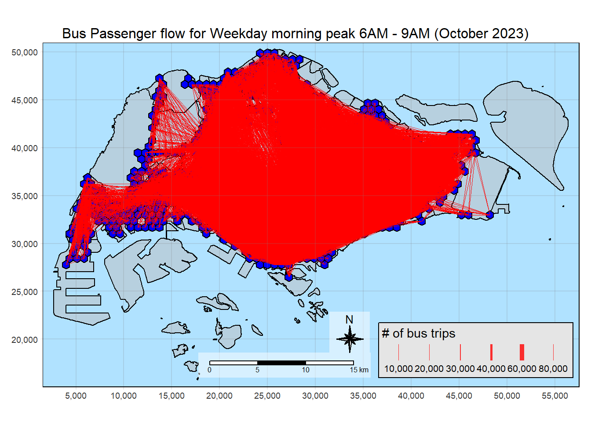
The above flowlines are very messy and highly skewed. Let us do a filter for trips > 5000 to identify the trips that are more significant.
Show the code
tm_shape(mpsz) +
tm_polygons("grey", title = "Singapore Boundary", alpha = 0.5) +
tm_shape(honeycomb) +
tm_polygons(col = "blue", title = "Hexagons", alpha = 1) +
tm_shape(flowlines %>% filter(TRIPS >= 5000)) +
tm_lines(lwd = "TRIPS",
style = "quantile",
col = "red",
scale = c(0.1, 1, 3, 5, 7),
title.lwd = "# of bus trips",
alpha = 0.8) +
tm_layout(main.title = "Bus Passenger flow for Weekday morning peak 6AM - 9AM (October 2023)",
main.title.position = "center",
main.title.size = 1.0,
legend.height = 0.4,
legend.width = 0.4,
frame = TRUE) +
tm_compass(type="8star", size = 2, bg.color = "white", bg.alpha = 0.5) +
tm_scale_bar(bg.color = "white", bg.alpha = 0.5) +
tm_grid(alpha = 0.2)We will save the flowlines output in rds format
write_rds(flowlines, "data/rds/flowlines.rds")Next, let us look determine the variables for attractiveness and propulsiveness
4.1.5 Attractiveness Variables
We first initiate attractiveness from honeycomb.
attractiveness <- honeycombFor all the variables, we will use a combination of lengths() and st_intersects() to derive the count for the number of each location types for each hexagon.{
For Bus Stops:
attractiveness$BUS_STOP_COUNT <- lengths(
st_intersects(attractiveness, busstops))For Train Exit Stations
train_exits <- st_read(dsn = "data/geospatial", layer = "Train_Station_Exit_Layer")Reading layer `Train_Station_Exit_Layer' from data source
`D:\starweb84\ISSS624\Take-home_Ex\Take-home_Ex2\data\geospatial'
using driver `ESRI Shapefile'
Simple feature collection with 565 features and 2 fields
Geometry type: POINT
Dimension: XY
Bounding box: xmin: 6134.086 ymin: 27499.7 xmax: 45356.36 ymax: 47865.92
Projected CRS: SVY21#EPSG value is 9001, which correspond to WGS84. To fix the projection, we have to transform to EPSG value of 3414, which corresponds to SVY21.
train_exits <- st_transform(train_exits, crs = 3414)
attractiveness$TRAIN_EXITS_COUNT <- lengths(st_intersects(attractiveness, train_exits))For FinServ
FinServ <- st_read(dsn = "data/geospatial", layer = "FinServ")Reading layer `FinServ' from data source
`D:\starweb84\ISSS624\Take-home_Ex\Take-home_Ex2\data\geospatial'
using driver `ESRI Shapefile'
Simple feature collection with 3320 features and 3 fields
Geometry type: POINT
Dimension: XY
Bounding box: xmin: 4881.527 ymin: 25171.88 xmax: 46526.16 ymax: 49338.02
Projected CRS: SVY21 / Singapore TM#EPSG value is 9001, which correspond to WGS84. To fix the projection, we have to transform to EPSG value of 3414, which corresponds to SVY21.
FinServ <- st_transform(FinServ , crs = 3414)
attractiveness$FinServ_COUNT <- lengths(st_intersects(attractiveness, FinServ ))For Business`
Business <- st_read(dsn = "data/geospatial", layer = "Business")Reading layer `Business' from data source
`D:\starweb84\ISSS624\Take-home_Ex\Take-home_Ex2\data\geospatial'
using driver `ESRI Shapefile'
Simple feature collection with 6550 features and 3 fields
Geometry type: POINT
Dimension: XY
Bounding box: xmin: 3669.148 ymin: 25408.41 xmax: 47034.83 ymax: 50148.54
Projected CRS: SVY21 / Singapore TM#EPSG value is 9001, which correspond to WGS84. To fix the projection, we have to transform to EPSG value of 3414, which corresponds to SVY21.
Business <- st_transform(Business , crs = 3414)
attractiveness$Business_COUNT <- lengths(st_intersects(attractiveness, Business ))For Pre-Schools We will import Pre-Schools Locations kml file from data.gov.sg. This variable is potentially one of the attractiveness of our destinations.
preschool = st_read('data/geospatial/PreschoolsLocation.kml') %>%
st_transform(preschool, crs=3414)Reading layer `PRESCHOOLS_LOCATION' from data source
`D:\starweb84\ISSS624\Take-home_Ex\Take-home_Ex2\data\geospatial\PreSchoolsLocation.kml'
using driver `KML'
Simple feature collection with 2290 features and 2 fields
Geometry type: POINT
Dimension: XYZ
Bounding box: xmin: 103.6878 ymin: 1.247759 xmax: 103.9897 ymax: 1.462134
z_range: zmin: 0 zmax: 0
Geodetic CRS: WGS 84attractiveness$preschool_COUNT <- lengths(st_intersects(attractiveness, preschool ))glimpse(attractiveness)Rows: 831
Columns: 7
$ geometry <POLYGON [m]> POLYGON ((3970.122 27348.13..., POLYGON ((43…
$ hexagon_id <fct> H0001, H0002, H0003, H0004, H0005, H0006, H0007, H00…
$ BUS_STOP_COUNT <int> 1, 1, 2, 1, 4, 1, 1, 1, 4, 2, 1, 3, 2, 5, 2, 1, 1, 5…
$ TRAIN_EXITS_COUNT <int> 0, 0, 0, 0, 0, 0, 0, 0, 0, 0, 0, 0, 0, 0, 0, 0, 0, 0…
$ FinServ_COUNT <int> 0, 0, 0, 0, 1, 0, 0, 0, 0, 0, 0, 0, 0, 0, 0, 0, 0, 0…
$ Business_COUNT <int> 0, 5, 4, 1, 50, 27, 3, 3, 66, 52, 4, 10, 23, 41, 2, …
$ preschool_COUNT <int> 0, 0, 0, 0, 0, 0, 0, 0, 0, 0, 0, 0, 0, 0, 0, 0, 0, 0…We note attractiveness is still missing HDB_COUNT. As we note that additional processing is needed to derive that, we will save this data first.
write_rds(attractiveness, "data/rds/attractiveness_no_hdb.rds")
write_rds(train_exits, "data/rds/train_exits.rds")4.1.5.1 Derive Passengers Alighting from Bus Stop
For this section, we first read the two database below.
busstop_hex <- read_rds("data/rds/busstop_hex.rds")
odbus6_9 <- read_rds("data/rds/odbus6_9.rds")We will aggregate the trips at destination at hexagon level and save as rds as it contains the data for propulsiveness variable.
destbushex <- odbus6_9 %>%
inner_join(busstop_hex,
by = join_by(DEST_BUS_STOP_N == BUS_STOP_N)) %>%
group_by(hexagon_id) %>%
summarise(TRIPS = sum(TRIPS))
glimpse(destbushex)Rows: 816
Columns: 2
$ hexagon_id <fct> H0001, H0002, H0003, H0004, H0005, H0006, H0007, H0008, H00…
$ TRIPS <dbl> 474, 2260, 2558, 530, 5999, 2777, 844, 132, 3623, 2207, 4, …write_rds(destbushex, "data/rds/destbushex.rds")4.1.5.2 Derive Train Passenger Data
For this section, we first read the two database below.
honeycomb <- read_rds("data/rds/honeycomb.rds")
train_exits <- read_rds("data/rds/train_exits.rds")We will next import that datasets for train passenger data, station code and names.
od_train <- read_csv("data/aspatial/origin_destination_train_202310.csv")
stationcodes_names <- read_csv("data/aspatial/TrainStationCodesandChineseNames.csv")Firstly we extract the station code and names so that we can connect the passenger data and train_exits data, given only ne has train station code and the other only have station name.
stationcodes_names <- stationcodes_names %>%
select(stn_code, mrt_station_english)Next we extract for weekday 6AM - 9AM, and the columns DESTINATION_PT_CODE and TOTAL_TRIPS since we are only interested in passengers leaving the train station.
od_train_trips <- od_train %>%
filter(DAY_TYPE == "WEEKDAY") %>%
filter( TIME_PER_HOUR >= 6 &
TIME_PER_HOUR < 9
) %>%
group_by(DESTINATION_PT_CODE) %>%
summarise(TRIPS = sum(TOTAL_TRIPS)) %>%
rename(TRAIN_ST_CODE = DESTINATION_PT_CODE)Let’s check the data we extracted so far.
Stationcodes_names
glimpse(stationcodes_names)Rows: 203
Columns: 2
$ stn_code <chr> "NS1", "NS2", "NS3", "NS4", "NS5", "NS7", "NS8", "…
$ mrt_station_english <chr> "Jurong East", "Bukit Batok", "Bukit Gombak", "Cho…We note the station names are not capitalized. For the station names, we will capitalize the names as the names are also capitalized in train_exits.
stationcodes_names <- stationcodes_names %>%
mutate(stn_name = toupper(mrt_station_english))
glimpse(stationcodes_names)Rows: 203
Columns: 3
$ stn_code <chr> "NS1", "NS2", "NS3", "NS4", "NS5", "NS7", "NS8", "…
$ mrt_station_english <chr> "Jurong East", "Bukit Batok", "Bukit Gombak", "Cho…
$ stn_name <chr> "JURONG EAST", "BUKIT BATOK", "BUKIT GOMBAK", "CHO…od_train_trips
glimpse(od_train_trips)Rows: 171
Columns: 2
$ TRAIN_ST_CODE <chr> "BP10", "BP11", "BP12", "BP13", "BP2", "BP3", "BP4", "BP…
$ TRIPS <dbl> 7672, 6307, 11422, 2738, 5953, 6438, 30931, 8105, 163178…We note that there are multiple station codes in TRAIN_ST_CODE column. However, in station_codes_names, the stn_code column only has 1 station code. We have to separate these station codes into their own rows.
od_train_trips <- od_train_trips %>%
separate_rows(TRAIN_ST_CODE, sep="/")
glimpse(od_train_trips)Rows: 203
Columns: 2
$ TRAIN_ST_CODE <chr> "BP10", "BP11", "BP12", "BP13", "BP2", "BP3", "BP4", "BP…
$ TRIPS <dbl> 7672, 6307, 11422, 2738, 5953, 6438, 30931, 8105, 163178…We check with both data frames now have the same noumber of rows to be mapped.
nrow(stationcodes_names) == nrow(od_train_trips)[1] TRUEtrain_exits
glimpse(train_exits)Rows: 565
Columns: 3
$ stn_name <chr> "MACPHERSON MRT STATION", "MACPHERSON MRT STATION", "MACPHER…
$ exit_code <chr> "Exit A", "Exit B", "Exit C", "Exit B", "Exit A", "Exit A", …
$ geometry <POINT [m]> POINT (34285.07 34322.99), POINT (34382.15 34231.9), P…We note that station names in train_exits have MRT STATION or LRT STATION in their names which is not present in station_code_names. In order to ensure that we can join the tables properly. we will remove this part of the station name.
train_exits <- train_exits %>%
mutate(stn_name_short = gsub(" [ML]RT STATION$" , "", stn_name))
glimpse(train_exits)Rows: 565
Columns: 4
$ stn_name <chr> "MACPHERSON MRT STATION", "MACPHERSON MRT STATION", "MA…
$ exit_code <chr> "Exit A", "Exit B", "Exit C", "Exit B", "Exit A", "Exit…
$ geometry <POINT [m]> POINT (34285.07 34322.99), POINT (34382.15 34231.…
$ stn_name_short <chr> "MACPHERSON", "MACPHERSON", "MACPHERSON", "TONGKANG", "…Next, let us look at joining the table for station_code_names and od_train_trips using the below code chunk.
od_train_trips_with_name <- stationcodes_names %>%
left_join(od_train_trips,
by = join_by(stn_code == TRAIN_ST_CODE)) %>%
select(stn_name, TRIPS) %>%
unique()
glimpse(od_train_trips_with_name)Rows: 171
Columns: 2
$ stn_name <chr> "JURONG EAST", "BUKIT BATOK", "BUKIT GOMBAK", "CHOA CHU KANG"…
$ TRIPS <dbl> 482713, 119936, 48451, 152682, 96331, 119073, 65880, 213784, …Next, we will join the train_exits to the previous table.
od_train_exits <- train_exits %>%
left_join(od_train_trips_with_name,
by = join_by(stn_name_short == stn_name)) %>%
rename(STN_NAME = stn_name) %>%
rename(EXIT_CODE = exit_code) %>%
select(STN_NAME, EXIT_CODE, TRIPS)Now we can aggregate the trips at a hexagon level.
od_train_hex <- honeycomb %>%
st_join(od_train_exits,
left = FALSE) %>%
group_by(hexagon_id) %>%
summarise(TRIPS = sum(TRIPS))
glimpse(od_train_hex)Rows: 184
Columns: 3
$ hexagon_id <fct> H0028, H0032, H0038, H0051, H0065, H0100, H0117, H0145, H01…
$ TRIPS <dbl> 73740, 136714, 143032, 123218, 501924, 221924, 1497738, 380…
$ geometry <POLYGON [m]> POLYGON ((6220.122 35142.35..., POLYGON ((6595.122 …We will save this dataframe.
write_rds(od_train_hex, "data/rds/od_train_hex.rds")4.1.5.3 Deriving HDB population
For this section, we will look at the following dataframes
mpsz <- read_rds("data/rds/mpsz.rds")
honeycomb <- read_rds("data/rds/honeycomb.rds")
attractiveness <- read_rds("data/rds/attractiveness_no_hdb.rds")To derive population data for each zone, we first initialize data to store hdb_vars from honeycomb.
hdb_vars <- honeycombNext we import the aspatial data hdb.csv
hdb_csv <- read_csv("data/aspatial/hdb.csv")There appears to be geospatial information on lattidue and longtitude within the fields. Let us convert this into a sf data type, which uses SVY21.
hdb_sf <- hdb_csv %>% st_as_sf(coords = c("lng", "lat"),
crs = 4326) %>%
st_transform(crs = 3414)Now let’s add the HDB_COUNT column on hdb_vars dataframe using the below code chunk, and join it to the attractiveness dataframe.
hdb_vars$HDB_COUNT <- lengths(st_intersects(hdb_vars, hdb_sf))
attractiveness <- left_join(attractiveness,
st_drop_geometry(hdb_vars))We note that some of the dwellings are not listed as residential. For purposes of calculating population estimate, we will focus on residential properties, and use the dataframe below.
hdb_filtered_sf <- hdb_sf %>%
filter(residential == "Y") %>%
select(total_dwelling_units)Given HDB count can be a variable used, there should be consideration that HDB blocks are different sizes. Research noted that according to the 2022 information from Department of Statistics, the average household size is 3.09 person. As we do not have information of how many persons actually live in each househould, we will use total_dwelling_units multiplied by the average - 3.09 - to improve our population estimate, using the code chunk below.
hdb_vars <- hdb_vars %>%
left_join(
st_intersection(hdb_filtered_sf, hdb_vars) %>%
st_drop_geometry() %>%
group_by(hexagon_id) %>%
summarise(HDB_RESIDENT_COUNT = sum(total_dwelling_units))
)
glimpse(hdb_vars)Rows: 831
Columns: 4
$ hexagon_id <fct> H0001, H0002, H0003, H0004, H0005, H0006, H0007, H0…
$ HDB_COUNT <int> 0, 0, 0, 0, 0, 0, 0, 0, 0, 0, 0, 0, 0, 0, 0, 0, 0, …
$ HDB_RESIDENT_COUNT <dbl> NA, NA, NA, NA, NA, NA, NA, NA, NA, NA, NA, NA, NA,…
$ geometry <POLYGON [m]> POLYGON ((3970.122 27348.13..., POLYGON ((4…4.1.6 Deriving Schoool information
We will import the Schools general information in csv format , downloaded from School Directory and Information from data.gov.sg. It contains location (implicitly in the form of the field ‘POSTAL_CODE’) of the MOE kindergartens, Primary Schools , Secondary Schools and junior colleges. It does not contain ITEs , Polytechnics and Universities locations.
school <- read_csv('data/aspatial/Generalinformationofschools.csv')Geocoding the schools location We will use the OneMap API to retrieve the longitude (X) and latitude (Y) coordinates using the ‘POSTAL_CODE’ field. First load the httr package which works in a TIDY manner.
library('httr')
url <- 'https://www.onemap.gov.sg/api/common/elastic/search'
postcodes <- school$`postal_code`Next we create 2 frames to contain the results.
found <- data.frame()
not_found <- data.frame()
for(postcode in postcodes) {
query <- list('searchVal' = postcode, 'returnGeom' = 'Y', 'getAddrDetails' = 'Y', 'pageNum' = '1')
res <- GET(url, query=query)
if((content(res)$found)!=0){
found<-rbind(found, data.frame(content(res))[4:13])
} else{
not_found = data.frame(postcode)
}
}merged = merge(school, found, by.x = 'postal_code' , by.y='results.POSTAL', all=TRUE)We next write a merged into a csv file and manually add the longitude and latitude (1.3887, 103.7652 ) of Zhenghua Secondary into the csv file. After manual edit, we save out the file as schools_geocoded1.csv and reload the schools_geocoded.csv file in R.
write.csv(merged, file = 'data/aspatial/schools_geocoded.csv')
write.csv(not_found, file = 'data/aspatial/not_found.csv')sch <- read_csv('data/aspatial/schools_geocoded1.csv') %>%
select(postal_code, school_name, results.LONGITUDE, results.LATITUDE )Next we convert the data into sf point object in SVY21 format.
sch_sf <- st_as_sf(sch,
coords = c('results.LONGITUDE','results.LATITUDE'),
crs=4326) %>%
st_transform(crs=3414)
attractiveness$School_COUNT <- lengths(st_intersects(attractiveness, sch_sf))
attractiveness %>% arrange(desc(School_COUNT)) %>% head()Simple feature collection with 6 features and 8 fields
Geometry type: POLYGON
Dimension: XY
Bounding box: xmin: 15220.12 ymin: 31894.76 xmax: 37720.12 ymax: 42503.57
Projected CRS: SVY21 / Singapore TM
hexagon_id BUS_STOP_COUNT TRAIN_EXITS_COUNT FinServ_COUNT Business_COUNT
1 H0210 1 0 0 0
2 H0435 4 1 1 0
3 H0707 11 0 1 0
4 H0145 9 3 5 0
5 H0169 11 0 1 0
6 H0189 11 4 14 0
preschool_COUNT HDB_COUNT School_COUNT geometry
1 2 11 4 POLYGON ((18970.12 40338.51...
2 2 0 4 POLYGON ((27595.12 33193.8,...
3 2 5 4 POLYGON ((37345.12 31894.76...
4 2 12 3 POLYGON ((15595.12 35791.87...
5 4 12 3 POLYGON ((17470.12 36441.39...
6 12 66 3 POLYGON ((18220.12 41637.55...We will save the data at this stage.
write_rds(hdb_vars, "data/rds/hdb_vars.rds")
write_rds(attractiveness, "data/rds/attractiveness.rds")4.1.6 Propulsiveness variables
Let’s begin this section by loading the following data:
honeycomb <- read_rds("data/rds/honeycomb.rds")
hdb_vars <- read_rds("data/rds/hdb_vars.rds")
destbushex <- read_rds("data/rds/destbushex.rds")
od_train_hex <- read_rds("data/rds/od_train_hex.rds")We initiate propulsiveness dataframe from honeycomb
propulsiveness <- honeycombWe then add pasenger and population values that we have previously derived using the below code chunk:
propulsiveness <- propulsiveness %>%
left_join(st_drop_geometry(hdb_vars)) %>%
select(hexagon_id, HDB_RESIDENT_COUNT)
propulsiveness <- propulsiveness %>%
left_join(st_drop_geometry(destbushex)) %>%
rename(BUS_ALIGHT_COUNT = TRIPS)
propulsiveness <- propulsiveness %>%
left_join(st_drop_geometry(od_train_hex)) %>%
rename(TRAIN_ALIGHT_COUNT = TRIPS)
glimpse(propulsiveness)Rows: 831
Columns: 5
$ hexagon_id <fct> H0001, H0002, H0003, H0004, H0005, H0006, H0007, H0…
$ HDB_RESIDENT_COUNT <dbl> NA, NA, NA, NA, NA, NA, NA, NA, NA, NA, NA, NA, NA,…
$ BUS_ALIGHT_COUNT <dbl> 474, 2260, 2558, 530, 5999, 2777, 844, 132, 3623, 2…
$ TRAIN_ALIGHT_COUNT <dbl> NA, NA, NA, NA, NA, NA, NA, NA, NA, NA, NA, NA, NA,…
$ geometry <POLYGON [m]> POLYGON ((3970.122 27348.13..., POLYGON ((4…We noted that there are NA values. We will set these to 0.
propulsiveness[is.na(propulsiveness)] <- 0We will now save this dataframe.
write_rds(propulsiveness, "data/rds/propulsiveness.rds")4.1.7 Generating distance table
Now we can generate the distance table. Let us load the following dataframe first.
honeycomb <- read_rds("data/rds/honeycomb.rds")We will generate the distance matrix using the following code chunk.
dist_mat <- spDists(as(honeycomb, "Spatial"),
longlat = FALSE)
colnames(dist_mat) <- paste0(honeycomb$hexagon_id)
rownames(dist_mat) <- paste0(honeycomb$hexagon_id)
glimpse(dist_mat) num [1:831, 1:831] 0 750 3269 1500 2704 ...
- attr(*, "dimnames")=List of 2
..$ : chr [1:831] "H0001" "H0002" "H0003" "H0004" ...
..$ : chr [1:831] "H0001" "H0002" "H0003" "H0004" ...Next we will generate a pivot table from our distance matrix and rename the columns as follow:
dist_tbl <- melt(dist_mat) %>%
rename(DISTANCE = value) %>%
rename(ORIG_hexagon_id = Var1) %>%
rename(DEST_hexagon_id = Var2)
glimpse(dist_tbl)Rows: 690,561
Columns: 3
$ ORIG_hexagon_id <fct> H0001, H0002, H0003, H0004, H0005, H0006, H0007, H0008…
$ DEST_hexagon_id <fct> H0001, H0001, H0001, H0001, H0001, H0001, H0001, H0001…
$ DISTANCE <dbl> 0.000, 750.000, 3269.174, 1500.000, 2704.163, 3968.627…4.1.7.1 Dealing with intra-zonal distances
Intra-zonal distances are currently at 0. This may be a result of passengers taking a short bus ride to the next stop. We would have to set these to a value other than 0, as in the latter part where we are using log-based Poisson models, log operations will be undefined if the variable is zero. Given the distance between centroids of adjacent hexagons is 750m and is 375m to their edges, we decided to adopt a percentile apporach where we would take 50% of 375m (188m - rounded up) as an estimate of average intra-zonal distance.
dist_tbl$DISTANCE[dist_tbl$ORIG_HEX_ID == dist_tbl$DEST_HEX_ID] <- 188
summary(dist_tbl$DISTANCE) Min. 1st Qu. Median Mean 3rd Qu. Max.
0 8250 13269 14118 18929 44680 We will save this distribution table.
write_rds(dist_tbl, "data/rds/dist_tbl.rds")4.1.8 Combining the data
Now we can combine the information to form the SIM_data set for modelling in the later stage. Let us load the needed data as follow:
honeycomb <- read_rds("data/rds/honeycomb.rds")
flowlines <- read_rds("data/rds/flowlines.rds")
dist_tbl <- read_rds("data/rds/dist_tbl.rds")
attractiveness <- read_rds("data/rds/attractiveness.rds")
propulsiveness <- read_rds("data/rds/propulsiveness.rds")
glimpse(honeycomb)Rows: 831
Columns: 2
$ geometry <POLYGON [m]> POLYGON ((3970.122 27348.13..., POLYGON ((4345.122 …
$ hexagon_id <fct> H0001, H0002, H0003, H0004, H0005, H0006, H0007, H0008, H00…glimpse(flowlines)Rows: 65,591
Columns: 4
$ ORIG_HEX_ID <fct> H0001, H0001, H0001, H0001, H0001, H0001, H0002, H0002, H0…
$ DEST_HEX_ID <fct> H0005, H0008, H0016, H0027, H0032, H0033, H0001, H0005, H0…
$ TRIPS <dbl> 1, 1, 4, 3, 93, 1, 1, 2, 1, 2, 3, 1, 2, 40, 1, 1, 3, 2, 2,…
$ geometry <LINESTRING [m]> LINESTRING (3970.122 27781...., LINESTRING (397…glimpse(dist_tbl)Rows: 690,561
Columns: 3
$ ORIG_hexagon_id <fct> H0001, H0002, H0003, H0004, H0005, H0006, H0007, H0008…
$ DEST_hexagon_id <fct> H0001, H0001, H0001, H0001, H0001, H0001, H0001, H0001…
$ DISTANCE <dbl> 0.000, 750.000, 3269.174, 1500.000, 2704.163, 3968.627…glimpse(attractiveness)Rows: 831
Columns: 9
$ hexagon_id <fct> H0001, H0002, H0003, H0004, H0005, H0006, H0007, H00…
$ BUS_STOP_COUNT <int> 1, 1, 2, 1, 4, 1, 1, 1, 4, 2, 1, 3, 2, 5, 2, 1, 1, 5…
$ TRAIN_EXITS_COUNT <int> 0, 0, 0, 0, 0, 0, 0, 0, 0, 0, 0, 0, 0, 0, 0, 0, 0, 0…
$ FinServ_COUNT <int> 0, 0, 0, 0, 1, 0, 0, 0, 0, 0, 0, 0, 0, 0, 0, 0, 0, 0…
$ Business_COUNT <int> 0, 5, 4, 1, 50, 27, 3, 3, 66, 52, 4, 10, 23, 41, 2, …
$ preschool_COUNT <int> 0, 0, 0, 0, 0, 0, 0, 0, 0, 0, 0, 0, 0, 0, 0, 0, 0, 0…
$ HDB_COUNT <int> 0, 0, 0, 0, 0, 0, 0, 0, 0, 0, 0, 0, 0, 0, 0, 0, 0, 0…
$ geometry <POLYGON [m]> POLYGON ((3970.122 27348.13..., POLYGON ((43…
$ School_COUNT <int> 0, 0, 0, 0, 0, 0, 0, 0, 0, 0, 0, 0, 0, 0, 0, 0, 0, 0…glimpse(propulsiveness)Rows: 831
Columns: 5
$ hexagon_id <fct> H0001, H0002, H0003, H0004, H0005, H0006, H0007, H0…
$ HDB_RESIDENT_COUNT <dbl> 0, 0, 0, 0, 0, 0, 0, 0, 0, 0, 0, 0, 0, 0, 0, 0, 0, …
$ BUS_ALIGHT_COUNT <dbl> 474, 2260, 2558, 530, 5999, 2777, 844, 132, 3623, 2…
$ TRAIN_ALIGHT_COUNT <dbl> 0, 0, 0, 0, 0, 0, 0, 0, 0, 0, 0, 0, 0, 0, 0, 0, 0, …
$ geometry <POLYGON [m]> POLYGON ((3970.122 27348.13..., POLYGON ((4…As flowlines contain the geometry of flowlines and TRIPS data, we will use it to initialize the SIM_data table We also adjust the column names to ensure joining is possible.
flowlines <- flowlines %>%
rename(
ORIG_hexagon_id = ORIG_HEX_ID,
DEST_hexagon_id = DEST_HEX_ID)
glimpse(flowlines)Rows: 65,591
Columns: 4
$ ORIG_hexagon_id <fct> H0001, H0001, H0001, H0001, H0001, H0001, H0002, H0002…
$ DEST_hexagon_id <fct> H0005, H0008, H0016, H0027, H0032, H0033, H0001, H0005…
$ TRIPS <dbl> 1, 1, 4, 3, 93, 1, 1, 2, 1, 2, 3, 1, 2, 40, 1, 1, 3, 2…
$ geometry <LINESTRING [m]> LINESTRING (3970.122 27781...., LINESTRING …SIM_data <- flowlinesNext, we carry out the joining of the remaining tables.
For propulsives and attractives, we add a prefix O_ and D_ to denote that propulsiveness columns are for origins and D are for destination
SIM_data <- SIM_data %>% left_join(dist_tbl)
glimpse(SIM_data)Rows: 65,591
Columns: 5
$ ORIG_hexagon_id <fct> H0001, H0001, H0001, H0001, H0001, H0001, H0002, H0002…
$ DEST_hexagon_id <fct> H0005, H0008, H0016, H0027, H0032, H0033, H0001, H0005…
$ TRIPS <dbl> 1, 1, 4, 3, 93, 1, 1, 2, 1, 2, 3, 1, 2, 40, 1, 1, 3, 2…
$ DISTANCE <dbl> 2704.163, 2250.000, 1984.313, 6873.864, 7611.669, 8842…
$ geometry <LINESTRING [m]> LINESTRING (3970.122 27781...., LINESTRING …propulsiveness <- propulsiveness%>%
st_drop_geometry() %>%
rename_with(~paste("O_", .x, sep = ""))
glimpse (propulsiveness)Rows: 831
Columns: 4
$ O_hexagon_id <fct> H0001, H0002, H0003, H0004, H0005, H0006, H0007, …
$ O_HDB_RESIDENT_COUNT <dbl> 0, 0, 0, 0, 0, 0, 0, 0, 0, 0, 0, 0, 0, 0, 0, 0, 0…
$ O_BUS_ALIGHT_COUNT <dbl> 474, 2260, 2558, 530, 5999, 2777, 844, 132, 3623,…
$ O_TRAIN_ALIGHT_COUNT <dbl> 0, 0, 0, 0, 0, 0, 0, 0, 0, 0, 0, 0, 0, 0, 0, 0, 0…#join propulsiveness
SIM_data <- left_join(
SIM_data,
propulsiveness, by = c("ORIG_hexagon_id"="O_hexagon_id"))
glimpse(SIM_data)Rows: 65,591
Columns: 8
$ ORIG_hexagon_id <fct> H0001, H0001, H0001, H0001, H0001, H0001, H0002, …
$ DEST_hexagon_id <fct> H0005, H0008, H0016, H0027, H0032, H0033, H0001, …
$ TRIPS <dbl> 1, 1, 4, 3, 93, 1, 1, 2, 1, 2, 3, 1, 2, 40, 1, 1,…
$ DISTANCE <dbl> 2704.163, 2250.000, 1984.313, 6873.864, 7611.669,…
$ O_HDB_RESIDENT_COUNT <dbl> 0, 0, 0, 0, 0, 0, 0, 0, 0, 0, 0, 0, 0, 0, 0, 0, 0…
$ O_BUS_ALIGHT_COUNT <dbl> 474, 474, 474, 474, 474, 474, 2260, 2260, 2260, 2…
$ O_TRAIN_ALIGHT_COUNT <dbl> 0, 0, 0, 0, 0, 0, 0, 0, 0, 0, 0, 0, 0, 0, 0, 0, 0…
$ geometry <LINESTRING [m]> LINESTRING (3970.122 27781...., LINEST…attractiveness <- attractiveness%>%
st_drop_geometry() %>%
rename_with(~paste("D_", .x, sep = ""))
glimpse (attractiveness)Rows: 831
Columns: 8
$ D_hexagon_id <fct> H0001, H0002, H0003, H0004, H0005, H0006, H0007, H…
$ D_BUS_STOP_COUNT <int> 1, 1, 2, 1, 4, 1, 1, 1, 4, 2, 1, 3, 2, 5, 2, 1, 1,…
$ D_TRAIN_EXITS_COUNT <int> 0, 0, 0, 0, 0, 0, 0, 0, 0, 0, 0, 0, 0, 0, 0, 0, 0,…
$ D_FinServ_COUNT <int> 0, 0, 0, 0, 1, 0, 0, 0, 0, 0, 0, 0, 0, 0, 0, 0, 0,…
$ D_Business_COUNT <int> 0, 5, 4, 1, 50, 27, 3, 3, 66, 52, 4, 10, 23, 41, 2…
$ D_preschool_COUNT <int> 0, 0, 0, 0, 0, 0, 0, 0, 0, 0, 0, 0, 0, 0, 0, 0, 0,…
$ D_HDB_COUNT <int> 0, 0, 0, 0, 0, 0, 0, 0, 0, 0, 0, 0, 0, 0, 0, 0, 0,…
$ D_School_COUNT <int> 0, 0, 0, 0, 0, 0, 0, 0, 0, 0, 0, 0, 0, 0, 0, 0, 0,…SIM_data <- left_join(
SIM_data,
attractiveness, by = c("ORIG_hexagon_id"="D_hexagon_id"))
glimpse(SIM_data)Rows: 65,591
Columns: 15
$ ORIG_hexagon_id <fct> H0001, H0001, H0001, H0001, H0001, H0001, H0002, …
$ DEST_hexagon_id <fct> H0005, H0008, H0016, H0027, H0032, H0033, H0001, …
$ TRIPS <dbl> 1, 1, 4, 3, 93, 1, 1, 2, 1, 2, 3, 1, 2, 40, 1, 1,…
$ DISTANCE <dbl> 2704.163, 2250.000, 1984.313, 6873.864, 7611.669,…
$ O_HDB_RESIDENT_COUNT <dbl> 0, 0, 0, 0, 0, 0, 0, 0, 0, 0, 0, 0, 0, 0, 0, 0, 0…
$ O_BUS_ALIGHT_COUNT <dbl> 474, 474, 474, 474, 474, 474, 2260, 2260, 2260, 2…
$ O_TRAIN_ALIGHT_COUNT <dbl> 0, 0, 0, 0, 0, 0, 0, 0, 0, 0, 0, 0, 0, 0, 0, 0, 0…
$ D_BUS_STOP_COUNT <int> 1, 1, 1, 1, 1, 1, 1, 1, 1, 1, 1, 1, 1, 1, 2, 2, 2…
$ D_TRAIN_EXITS_COUNT <int> 0, 0, 0, 0, 0, 0, 0, 0, 0, 0, 0, 0, 0, 0, 0, 0, 0…
$ D_FinServ_COUNT <int> 0, 0, 0, 0, 0, 0, 0, 0, 0, 0, 0, 0, 0, 0, 0, 0, 0…
$ D_Business_COUNT <int> 0, 0, 0, 0, 0, 0, 5, 5, 5, 5, 5, 5, 5, 5, 4, 4, 4…
$ D_preschool_COUNT <int> 0, 0, 0, 0, 0, 0, 0, 0, 0, 0, 0, 0, 0, 0, 0, 0, 0…
$ D_HDB_COUNT <int> 0, 0, 0, 0, 0, 0, 0, 0, 0, 0, 0, 0, 0, 0, 0, 0, 0…
$ D_School_COUNT <int> 0, 0, 0, 0, 0, 0, 0, 0, 0, 0, 0, 0, 0, 0, 0, 0, 0…
$ geometry <LINESTRING [m]> LINESTRING (3970.122 27781...., LINEST…We do a check of the consolidated data.
summary(SIM_data) ORIG_hexagon_id DEST_hexagon_id TRIPS DISTANCE
H0725 : 295 H0515 : 354 Min. : 1.0 Min. : 0
H0518 : 294 H0501 : 335 1st Qu.: 7.0 1st Qu.: 2704
H0515 : 293 H0537 : 325 Median : 38.0 Median : 5408
H0527 : 283 H0525 : 296 Mean : 387.4 Mean : 6283
H0678 : 280 H0518 : 295 3rd Qu.: 180.0 3rd Qu.: 8842
H0648 : 278 H0489 : 290 Max. :77433.0 Max. :24784
(Other):63868 (Other):63696
O_HDB_RESIDENT_COUNT O_BUS_ALIGHT_COUNT O_TRAIN_ALIGHT_COUNT D_BUS_STOP_COUNT
Min. : 0 Min. : 3 Min. : 0 Min. : 1.000
1st Qu.: 0 1st Qu.: 16894 1st Qu.: 0 1st Qu.: 5.000
Median : 932 Median : 33608 Median : 0 Median : 8.000
Mean :1849 Mean : 55206 Mean : 177740 Mean : 7.911
3rd Qu.:3351 3rd Qu.: 65414 3rd Qu.: 92732 3rd Qu.:10.000
Max. :7946 Max. :477992 Max. :6777452 Max. :19.000
D_TRAIN_EXITS_COUNT D_FinServ_COUNT D_Business_COUNT D_preschool_COUNT
Min. : 0.00 Min. : 0.000 Min. : 0.000 Min. : 0.000
1st Qu.: 0.00 1st Qu.: 1.000 1st Qu.: 0.000 1st Qu.: 1.000
Median : 0.00 Median : 3.000 Median : 1.000 Median : 3.000
Mean : 1.26 Mean : 7.882 Mean : 6.519 Mean : 3.923
3rd Qu.: 2.00 3rd Qu.: 9.000 3rd Qu.: 6.000 3rd Qu.: 6.000
Max. :13.00 Max. :139.000 Max. :97.000 Max. :21.000
D_HDB_COUNT D_School_COUNT geometry
Min. : 0.00 Min. :0.000 LINESTRING :65591
1st Qu.: 0.00 1st Qu.:0.000 epsg:3414 : 0
Median : 11.00 Median :0.000 +proj=tmer...: 0
Mean : 20.76 Mean :0.561
3rd Qu.: 36.00 3rd Qu.:1.000
Max. :103.00 Max. :4.000
In order to ensure the data is compatible with modelling, we need to remove the 0’s as we will apply log function to them, which would result to undefined. We will set these to 0.99 so we are aware that .
replace_zeroes <- function(data, col_name) {
data[[col_name]][data[[col_name]] == 0] <- 0.99
data
}
SIM_data <- SIM_data %>%
replace_zeroes("O_HDB_RESIDENT_COUNT") %>%
replace_zeroes("O_BUS_ALIGHT_COUNT") %>%
replace_zeroes("O_TRAIN_ALIGHT_COUNT") %>%
replace_zeroes("D_BUS_STOP_COUNT") %>%
replace_zeroes("D_TRAIN_EXITS_COUNT") %>%
replace_zeroes("D_HDB_COUNT") %>%
replace_zeroes("D_FinServ_COUNT") %>%
replace_zeroes("D_preschool_COUNT") %>%
replace_zeroes("D_School_COUNT") %>%
replace_zeroes("D_Business_COUNT")
summary(SIM_data) ORIG_hexagon_id DEST_hexagon_id TRIPS DISTANCE
H0725 : 295 H0515 : 354 Min. : 1.0 Min. : 0
H0518 : 294 H0501 : 335 1st Qu.: 7.0 1st Qu.: 2704
H0515 : 293 H0537 : 325 Median : 38.0 Median : 5408
H0527 : 283 H0525 : 296 Mean : 387.4 Mean : 6283
H0678 : 280 H0518 : 295 3rd Qu.: 180.0 3rd Qu.: 8842
H0648 : 278 H0489 : 290 Max. :77433.0 Max. :24784
(Other):63868 (Other):63696
O_HDB_RESIDENT_COUNT O_BUS_ALIGHT_COUNT O_TRAIN_ALIGHT_COUNT D_BUS_STOP_COUNT
Min. : 0.99 Min. : 3 Min. : 1 Min. : 1.000
1st Qu.: 0.99 1st Qu.: 16894 1st Qu.: 1 1st Qu.: 5.000
Median : 932.00 Median : 33608 Median : 1 Median : 8.000
Mean :1849.09 Mean : 55206 Mean : 177741 Mean : 7.911
3rd Qu.:3351.00 3rd Qu.: 65414 3rd Qu.: 92732 3rd Qu.:10.000
Max. :7946.00 Max. :477992 Max. :6777452 Max. :19.000
D_TRAIN_EXITS_COUNT D_FinServ_COUNT D_Business_COUNT D_preschool_COUNT
Min. : 0.990 Min. : 0.99 Min. : 0.990 Min. : 0.990
1st Qu.: 0.990 1st Qu.: 1.00 1st Qu.: 0.990 1st Qu.: 1.000
Median : 0.990 Median : 3.00 Median : 1.000 Median : 3.000
Mean : 1.888 Mean : 8.12 Mean : 6.965 Mean : 4.101
3rd Qu.: 2.000 3rd Qu.: 9.00 3rd Qu.: 6.000 3rd Qu.: 6.000
Max. :13.000 Max. :139.00 Max. :97.000 Max. :21.000
D_HDB_COUNT D_School_COUNT geometry
Min. : 0.99 Min. :0.990 LINESTRING :65591
1st Qu.: 0.99 1st Qu.:0.990 epsg:3414 : 0
Median : 11.00 Median :0.990 +proj=tmer...: 0
Mean : 21.11 Mean :1.183
3rd Qu.: 36.00 3rd Qu.:1.000
Max. :103.00 Max. :4.000
We now save the data frames.
write_rds(flowlines, "data/rds/flowlines.rds")
write_rds(SIM_data, "data/rds/SIM_data.rds")5 Visualizing Spatial Interactions
Let us load the dataframes for the purpose of this section:
mpsz <- read_rds("data/rds/mpsz.rds")
honeycomb <- read_rds("data/rds/honeycomb.rds")
flowlines <- read_rds("data/rds/flowlines.rds")
SIM_data <- read_rds("data/rds/SIM_data.rds")
propulsiveness <- read_rds("data/rds/propulsiveness.rds")
attractiveness <- read_rds("data/rds/attractiveness.rds")First we remove the intra-zonal flows to reduce no. of flow lines.
flowlines_no_intra <- flowlines %>%
filter(ORIG_hexagon_id != DEST_hexagon_id)Next we reviewed the quantile range, and noted that at 99%, there are some insights from the flows.
quantile(flowlines_no_intra$TRIPS,
probs = c(0.85, 0.9, 0.95, 0.99, 1)) 85% 90% 95% 99% 100%
393.00 664.00 1417.00 6096.35 77433.00 Show the code
tm_shape(mpsz) +
tm_polygons("grey", title = "Singapore Boundary", alpha = 0.5) +
tm_shape(honeycomb) +
tm_polygons(col = "blue", title = "Hexagons", alpha = 1) +
tm_shape(flowlines_no_intra %>% filter(TRIPS > 6096)) +
tm_lines(lwd = "TRIPS",
style = "quantile",
col = "red",
scale = c(0.1, 1, 3, 5, 7),
title.lwd = "# of bus trips",
alpha = 0.8) +
tm_layout(main.title = "Top 1% Bus Passenger flow for Weekday 6am to 9am (October 2023)",
main.title.position = "center",
main.title.size = 1.0,
legend.height = 0.4,
legend.width = 0.4,
frame = TRUE) +
tm_compass(type="8star", size = 2, bg.color = "white", bg.alpha = 0.5) +
tm_scale_bar(bg.color = "white", bg.alpha = 0.5) +
tm_grid(alpha = 0.2)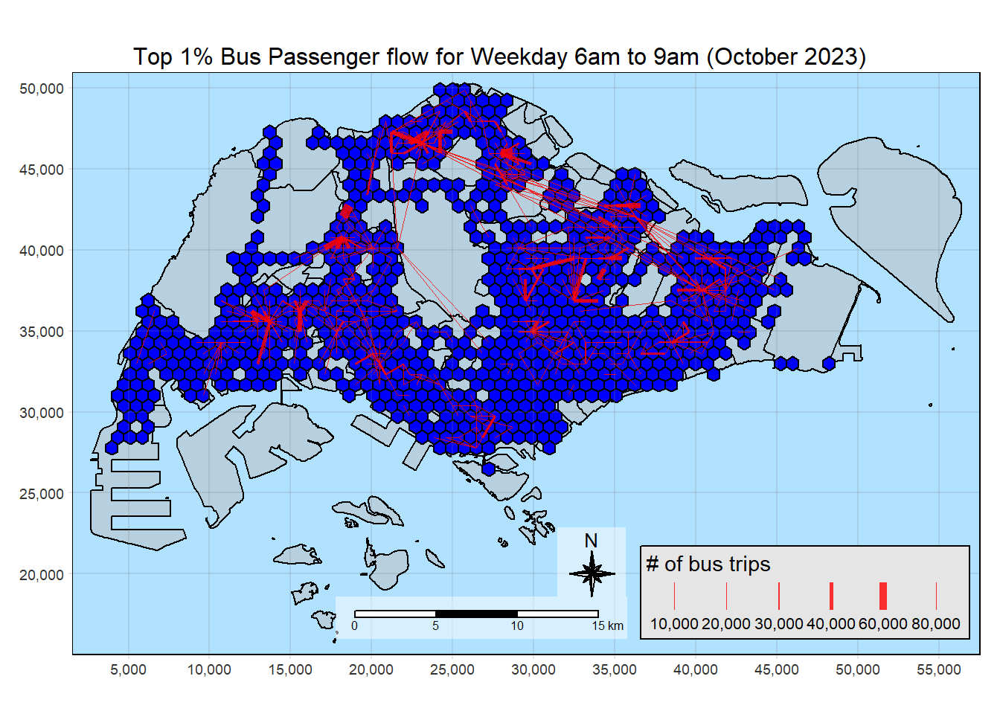
The high flows are identified at the major transport hubs, such as Boon Lay, Bedok, Tampines, Clementi, and Woodlands interchange. In particular we see a concentration of lines around these areas, indicating usage of feeder services to likely reach the interchange or to their work locations in the mornings.While majority are rather short lines between circa 15km of each concentrated area, We do see people travel in longer distances such as that between tampines and woodlands. While bus rides are more preferred for relatively short distance travels, there are some longer distance lines which we can investigate further.
5.1 Charting for TRIPS vs. DISTANCE
Let us plot a chart for TRIPS vs. DISTANCE to assess further.
Show the code
ggplot(SIM_data,
aes(x = DISTANCE, y = TRIPS)) +
geom_point() +
geom_hline(yintercept = 1417, color = "green", linetype = "dashed") +
annotate("text", x = 20000,
y = 600, label = "95th percentile",
hjust = -0.1, color = "green", size = 3) +
geom_hline(yintercept = 6096, color = "red", linetype = "dashed") +
annotate("text", x = 20000,
y = 1800, label = "99th percentile",
hjust = -0.1, color = "red", size = 3) +
labs(title = "Number of Trips as a Function of Distance",
x = "Distance (m)",
y = "Number of Trips")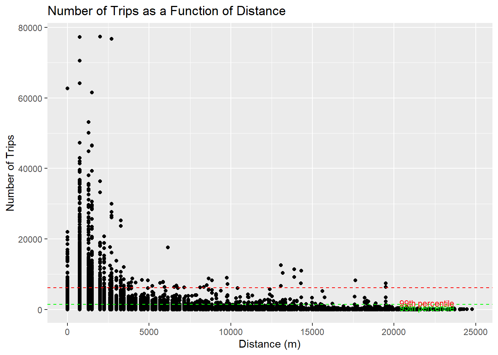
Show the code
ggplot(SIM_data,
aes(x = log(DISTANCE), y = log(TRIPS))) +
geom_point() +
geom_smooth(method = lm)
As expected, maximum number of trips exponentially decrease as the distance increases. By and large, the further the distance, the less trips there are.
Some outliers can be observed where zone pairs with almost 20km distance between them at near 99th percentile of TRIP values. There could be strong propulsive or attractive forces in these zones that attract passengers to ride the bus between those zones.
5.2 Visualizing propulsive forces
Let us plot the top 1% busiest flows, while looking at HDB population, transfers from train and buses to investigate their relationship with bus flows.
Show the code
plot_propulsive <- function(var_name, title_comp) {
tm_shape(mpsz) +
tm_polygons("grey", title = "Singapore Boundary") +
# Adding this layer underneath propulsiveness as we removed 0s. from the map
# so it won't skew the legend
tm_shape(honeycomb) +
tm_polygons(col = "grey") +
tm_shape(propulsiveness %>% filter(if_any(var_name, ~. >= 1))) +
tm_polygons(var_name, palette = "Blues", style = "quantile") +
tm_shape(flowlines_no_intra %>% filter(TRIPS > 6096)) +
tm_lines(lwd = "TRIPS",
style = "quantile",
col = "red",
scale = c(0.1, 1, 3, 5, 7, 10),
title.lwd = "# of bus trips",
n = 6,
alpha = 0.5) +
tm_layout(main.title = paste("Top 1% Bus Passenger Flows and", title_comp),
main.title.position = "center",
main.title.size = 1.0,
legend.height = 0.35,
legend.width = 0.35,
frame = TRUE) +
tm_scale_bar(bg.color = "white", bg.alpha = 0.7, position = c("right", "top")) +
tm_compass(type="8star", size = 2, bg.color = "white",
bg.alpha = 0.5, position = c("right", "top")) +
tm_grid(alpha = 0.2) +
tm_credits("*Passenger data from weekday 6AM - 9AM (October 2023)",
bg.color = "white", bg.alpha = 0.7,
position = c("left", "bottom"))
}HDB Population v Bus Passenger flows
plot_propulsive("HDB_RESIDENT_COUNT", "HDB Population")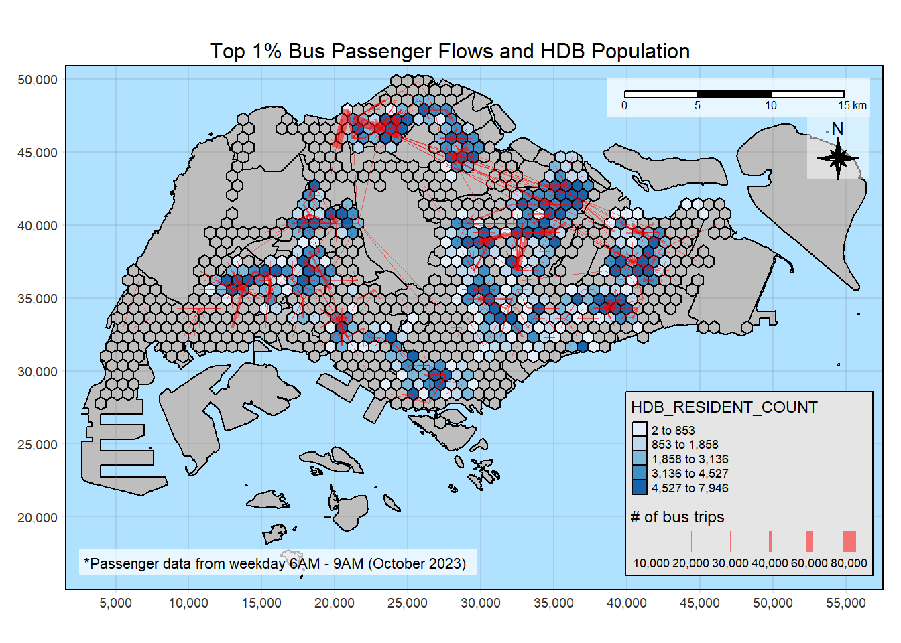
Train transfers v Bus Passenger flows
plot_propulsive("TRAIN_ALIGHT_COUNT", "Potential Transfers from Train")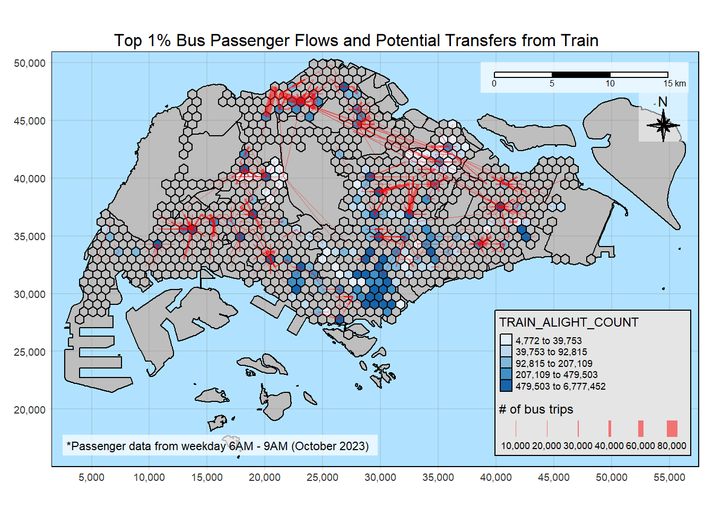
Bus Transfers vs Bus Passenger flows
plot_propulsive("BUS_ALIGHT_COUNT", "Potential Transfers from Bus")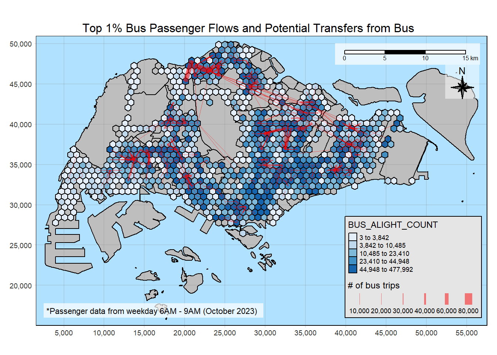
We observe that both the HDB population and train exits appear to align closely to our flow lines. This is likely due to the fact that majority of persons are travelling from their residences to work during this period, where majority of them also alight at train stations. However we do note that for those areas with a higher indication, they also have other facilities near the train stations, such as entertaininment malls close to the vicinity where it may have led to higher counts.
5.3 Visualizing attractive forces
Let us plot the top 1% busiest flows, while looking at HDB count, entertainment, F%B, Leisure and Recreation, Bus stops and Train stations to investigate their relationship with bus flows.
Show the code
plot_attractive <- function(var_name, title_comp) {
tm_shape(mpsz) +
tm_polygons("grey", title = "Singapore Boundary") +
# Adding this layer underneath attractiveness as we removed 0s. from the map
# so it won't skew the legend
tm_shape(honeycomb) +
tm_polygons(col = "grey") +
tm_shape(attractiveness %>% filter(if_any(var_name, ~. >= 1))) +
tm_polygons(var_name, palette = "Purples", style = "quantile") +
tm_shape(flowlines_no_intra %>% filter(TRIPS > 6096)) +
tm_lines(lwd = "TRIPS",
style = "quantile",
col = "red",
scale = c(0.1, 1, 3, 5, 7, 10),
title.lwd = "# of bus trips",
n = 6,
alpha = 0.5) +
tm_layout(main.title = paste("Top 1% Bus Passenger Flows and", title_comp),
main.title.position = "center",
main.title.size = 1.0,
legend.height = 0.35,
legend.width = 0.35,
frame = TRUE) +
tm_scale_bar(bg.color = "white", bg.alpha = 0.7, position = c("right", "top")) +
tm_compass(type="8star", size = 2, bg.color = "white",
bg.alpha = 0.5, position = c("right", "top")) +
tm_grid(alpha = 0.2) +
tm_credits("*Passenger data from Weekday 6am to 9am (October 2023)",
bg.color = "white", bg.alpha = 0.7,
position = c("left", "bottom"))
}HDB Count v Bus Passenger flows
plot_attractive("BUS_STOP_COUNT", "Number of Bus Stops")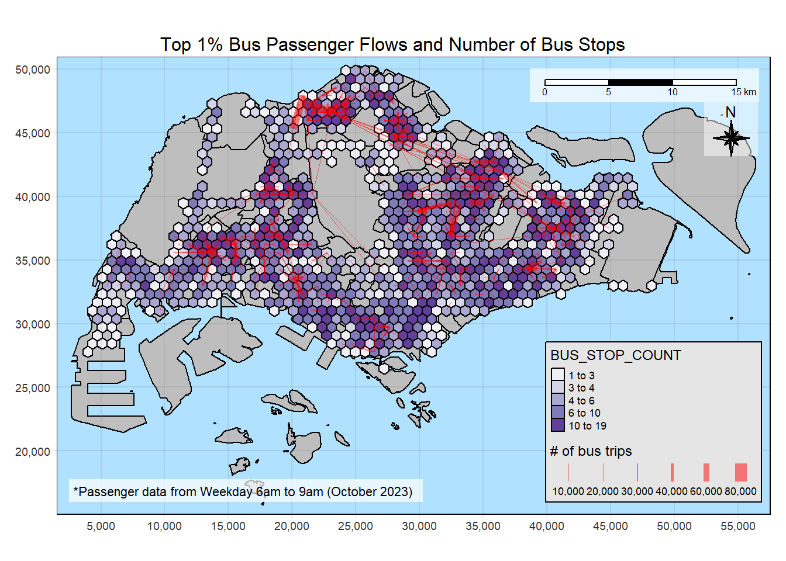
Train transfers v Bus Passenger flows
plot_attractive("TRAIN_EXITS_COUNT", "Number of Train Stations")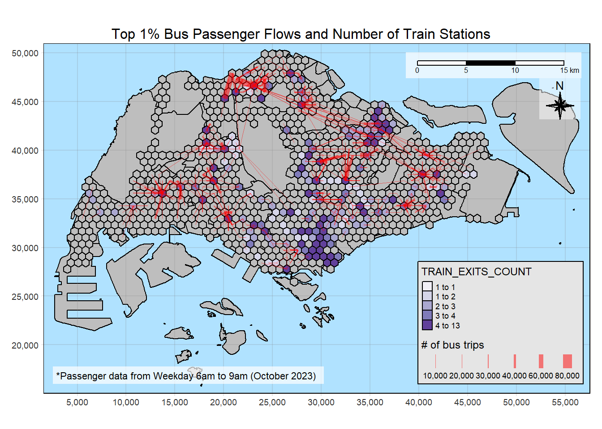
No. of HDB blocks v Bus Passenger flows
plot_attractive("HDB_COUNT", "Number of HDB blocks")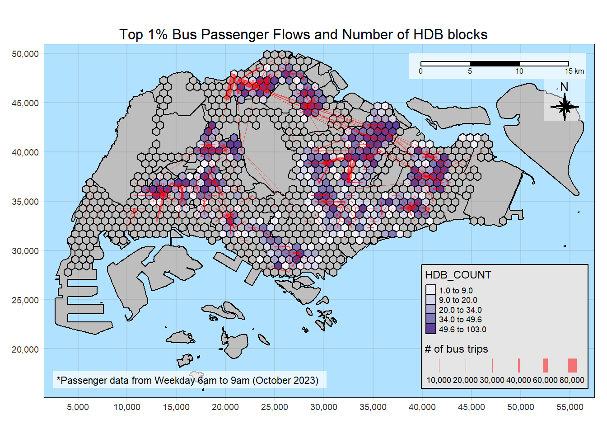
No. of Entertainment location v Bus Passenger flows
plot_attractive("preschool_COUNT", "Number of Preschool Locations")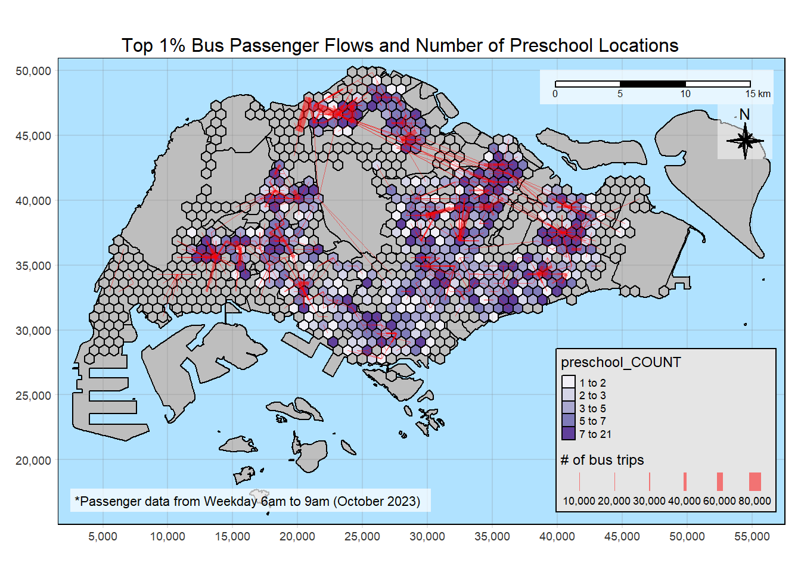
No. of F&B Outlets v Bus Passenger flows
plot_attractive("School_COUNT", "Number of School Locations")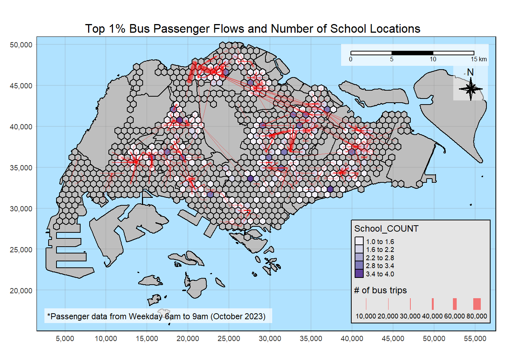
No. of FinServ locations v Bus Passenger flows
plot_attractive("FinServ_COUNT", "Number of Financial Services Locations")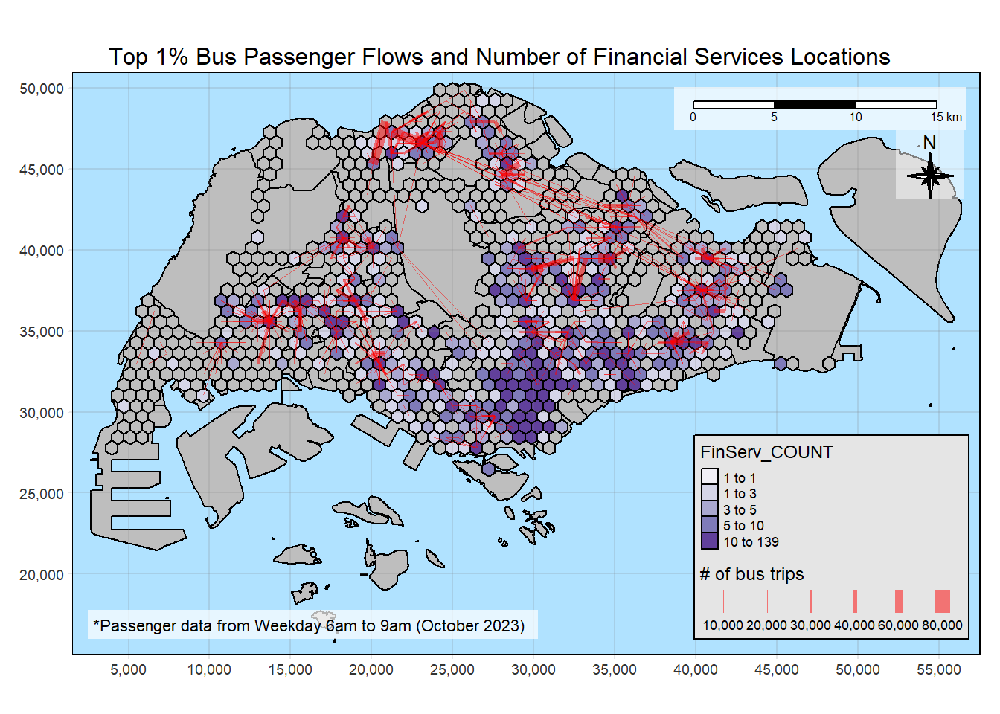
No. of Business locations v Bus Passenger flows
plot_attractive("Business_COUNT", "Number of Business Locations")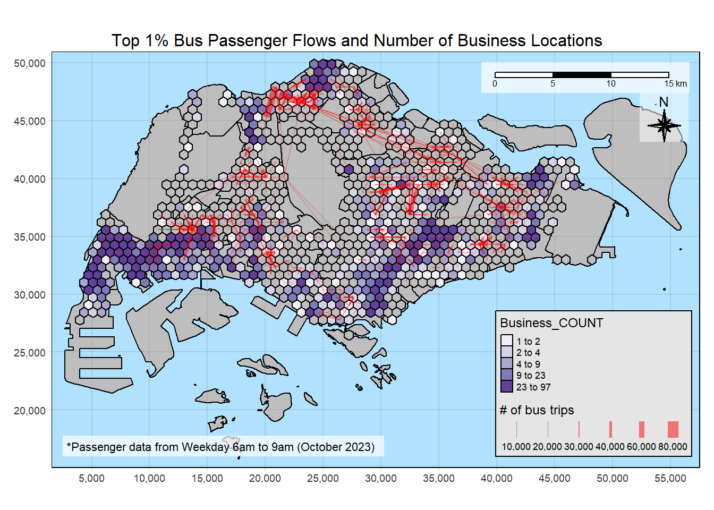
Observations note that passengers often most of the flows surround areas with higher concentration of business, financial services, preschools and schools which is aligned to destinations we expect. We also note that a large no. of business concentration is identified in the western part of Singapore, where we saw some flows to. However, given that is quite sparse, it may indicate other forms of transport used to reach these locations. Interestingly, we do not see thick lines or flows into the city area where the financial services are congregated during this period. Further investigation into potential reasons,such as higher occurrences of traffic jams on the road, should be explored to determine if there is any correlation to the bus flows being not as high.
We will now save the flowline data excluding the intraflows.
write_rds(SIM_data, "data/rds/flowlines_no_intra.rds")6 Spatial Interaction Modelling
For this section, we will start by loading the following table:
SIM_data <- read_rds("data/rds/SIM_data.rds")We will use 4 log-based Poisson gravity models to perform our spatial interaction modelling, as detailed below with the respective formula
Unconstrained: This will model the TRIPS using all the independent model components.
origin constrained: This will model the TRIPS without the attractive forces.
Destination constrained: This will model the TRIPS without the propulsive forces.
Doubly constrained: This will model the TRIPS without the attractive and propulsive forces.